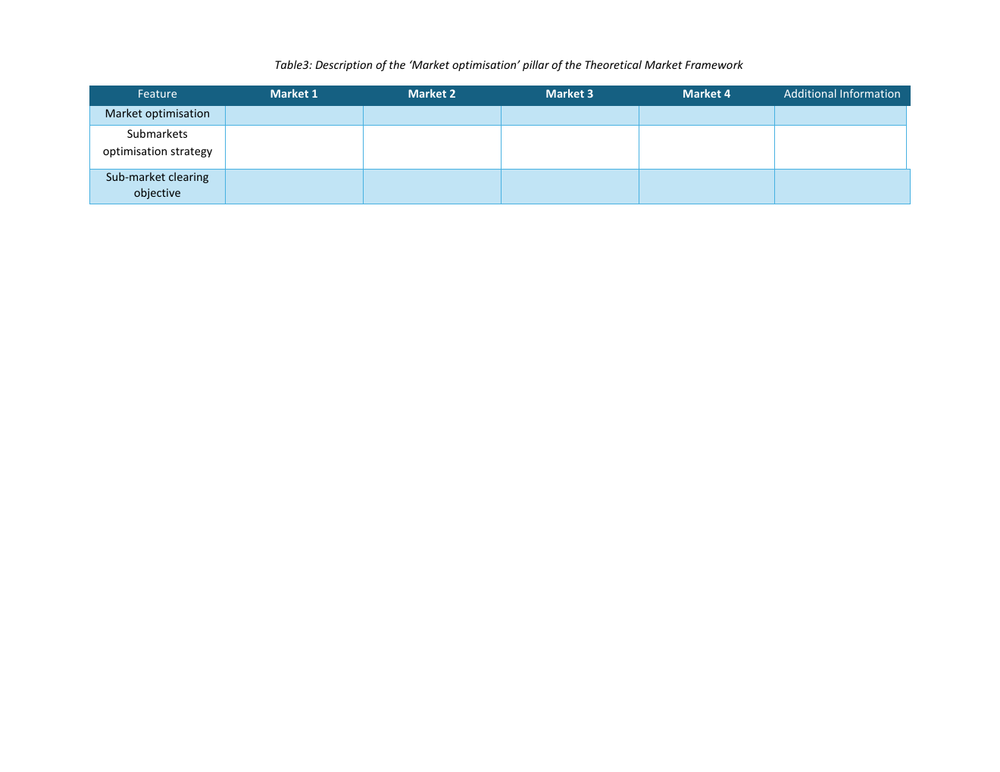

Source-grounded tutorial
How to think about this pillar
This pillar records the organisation of optimisation, the relationship between sub-market clearings and the objective used to select the market outcome.
The clearing intelligence
Defines how related sub-markets are organised, solved and optimised.
Jump to feedbackSource-grounded tutorial
This pillar records the organisation of optimisation, the relationship between sub-market clearings and the objective used to select the market outcome.

Market-design intelligence
Describe the clearing logic for each market and how it relates to other sub-markets.
State whether optimisation is centralised, decentralised or distributed.
State whether related sub-markets are solved simultaneously, sequentially or independently.
Record the clearing objective, such as cost minimisation, social-welfare maximisation or reduction of counter-activations.
Theoretical Market Framework feature map
Use this table as both a terminology reference and a data-entry guide for Market Optimisation.
| Feature | Sub-feature / decision | Data type | Definition | How to read the choice |
|---|---|---|---|---|
| Market optimisation | Optimisation methodology | Categorical: centralised / decentralised / distributed | Organisational approach used to optimise across related markets and system levels. | Choose where optimisation responsibility is located. |
| Submarkets optimisation strategy | Relationship between clearings | Categorical: simultaneous / sequential / independent | Rule describing whether related sub-markets are solved together, one after another, or separately. | Record the relationship among clearings. |
| Sub-market clearing objective | Optimisation objective | Categorical / text | Quantity the clearing process seeks to optimise, e.g. cost, social welfare or counter-activations. | State the objective used to select the result. |
For each Market 1-4, record the optimisation methodology, its relationship with other clearings, and the clearing objective.

Expert feedback
Do these optimisation fields distinguish existing designs and guide a new coordinated distribution-level market?
Open the discussion to comment here through the project GitHub Q&A thread. Any one of the three feedback actions completes this pillar in the review progress.